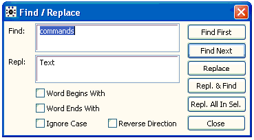
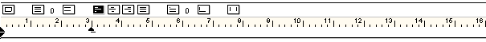

![[textmenu0]](textmenu0.bmp) The Text Menu
The Text Menu
Contents
General properties
Find/Replace...
Find Again
Find Previous
Find First
Find Last
Shift Left
Shift Right
Insert Paragraph
Insert Ruler
Insert-Soft-Hyphen
Insert Non-Brk-Hyphen
Insert Non-Brk-Space
Insert Digit Space
Show/Hide Marks
Make Default Attributes
Make Default Ruler
General properties [top]
The commands in this menu provide tools for searching for and replacing text and inserting special formatting options into the text.
Find/Replace... [top]
This command is used to find and replace text. It causes a non modal dialog box to pop up.

The 'Find' field contains the text to be searched for. If a stretch of text is highlighted before this dialog is opened this will appear in the 'Find' field. The 'Repl.' field is the text that will be substituted for the text in the 'Find' field if the 'Replace', 'Repl. & Find' or 'Repl. All In Sel.' buttons are clicked. 'Repl. & Find' will also find the next occurrence of the 'Find' text. 'Repl. All In Sel.' will replace all occurrences of the 'Find' text that are within the highlighted section of text in the window.
Find Again [top]
This command finds the next occurrence of a highlighted piece of text in the document.
Find Previous [top]
This command finds the previous occurrence of a highlighted piece of text in the document.
Find First [top]
This command finds the first occurence of a highlighted piece of text in the document.
Find Last [top]
This command finds the last occurence of a highlighted piece of text in the document.
Shift Left [top]
This command shifts the highlighted text one tab stop to the left.
Shift Right [top]
This command shifts the highlighted text one tab stop to the right.
Insert Paragraph [top]
Insert Ruler [top]
This command inserts a ruler at the caret position of the text document.

The ruler controls the formatting of the text below the ruler until another ruler is encountered. Tab stops can be added to the ruler by clicking with the mouse in the white region below the grey shaded bar. The tab stop shows up as a black inverted triangle. The position of the tab stop can be changed by dragging it with the mouse. To remove a tab stop drag it all the way to the extreme left edge of the ruler.
The buttons above the grey shaded bar control the margins, line spacing, and justification. If you click the first button, a black triangle will appear on the right side of the ruler. Dragging this triangle will change the right margin. The second and third buttons decrease and increase the line spacing, respectively. The current line spacing is shown by the number between the two buttons. The justification of the text can be changed to left-justified, center-justified, right-justified, or fill-justified by clicking in the fourth, fifth, sixth or seventh button, respectively. The eighth and ninth buttons control the line spacing between paragraphs. Clicking the last button will cause the ruler to force a page break.
Insert-Soft-Hyphen [top]
Insert Non-Brk-Hyphen [top]
This command inserts a hyphen that will not split over a line break.
Insert Non-Brk-Space [top]
This command inserts a space that will not split over a line break. It is useful if you want to underline a stretch of text containing spaces.
Insert Digit Space [top]
This command inserts a space that has the same width as a digit (0..9).
Show/Hide Marks [top]
This command toggles between making special formatting controls visible in the text or making them invisible. Seeing the formatting controls is particularly useful when creating targets and links. See the Tools menu for a description on how to do this.
Make Default Attributes [top]
Make Default Ruler [top]